KUANTUM FİZİĞİ ve MATERYALİST REALİZMİN ÖLÜMÜ
Yaklaşık bir asır önce, fizikte yapılan bir dizi deneysel keşif, dünya görüşümüzde bir değişiklik yapmamızı gerektirdi. Filozof Thomas Kuhn’un sözleriyle ortaya çıkmaya başlayan şey, klasik fizikle açıklanamayan anormalliklerdi.1 Bu anormallikler, bilimsel düşüncede bir devrime kapı açtı.
Yüzyılın başında bir fiziki olduğunuzu hayal edin. Siz ve meslektaşlarınızın anlamak üzere ilgilendiğiniz anormalliklerden biri, sıcak cisimlerin nasıl radyasyon yaydıklarıdır. Newtoncu gelenekle yetişmiş bir fizikçi olarak, evrenin neredeyse tamamının bilinen Newtoncu yasalara göre davranan parçalardan oluşmuş klasik bir makine olduğuna inanmaktasınız. Parçalar hakkında tüm bilgiye sahip olunca ve kanunlar hakkında geride kalan bir iki bit yeniğini de çözünce, evrenin geleceğini sonsuza dek tahmin edebileceğinize inanıyorsunuz. Sıcak cisimlerden radyasyon yayınımı kanunu nedir, gibisinden soruları cevaplandırmaya hazır değilsiniz.
Siz bu soru üstünde kafa patlatırken, sevgilinizle yan yana harıl harıl yanan kütüklerle dolu bir şöminenin önünde oturduğunuzu hayal edin.
SİZ (mırıldanarak): Bir türlü çözemiyorum.
SEVDİĞİNİZ KİŞİ: Fıstık kabını versene.
SİZ (fıstıkları verirken): Şu an niçin iyice bronzlaşmadığımızı anlayamıyorum.
SK (gülerek): Eh, bu pek hoş olurdu. Şömineyi yazın yakma bahanemiz bile olurdu.
SİZ: Görüyorsun ya, teori, şömineden çıkan radyasyonun, yüksek frekans (mor ötesi) bakımından güneş ışığı kadar zengin olması gerektiğini söylüyor. Ama bu yüksek frekanslar açısından güneş ışığını zengin kılan ama şöminenin ışığını zengin kılmayan nedir? Şu an niçin mor ötesi ışınlarla bronzlaşmıyoruz?
SK: Bir dakika, lütfen. Eğer bunları cidden dinleyeceksem, biraz yavaşlayıp anlatmalısın. Frekans ne? Mor ötesi ne?
SİZ: Özür dilerim. Frekans, saniyedeki devir sayısıdır. Bir dalganın ne kadar hızla titreştiğinin ölçüsüdür. Işık için bu, renk anlamına gelir. Beyaz ışık çeşitli frekanslardan ya da renklerden oluşur. Kırmızı düşük frekanslı ışıktır, mor ise yüksek frekanslı ışıktır. Eğer frekans daha da yüksekse, bu, görünmez kara ışıktır; buna mor ötesi diyoruz.
SK: Peki, öyleyse hem yanan odundan çıkan ışık hem de güneş bolca mor ötesi çıkarmalı. Ne yazık ki, güneş teorine uyuyor ama yanan odunlar uymuyor. Belki de yanan odunda özel bir şeyler var...
SİZ: Aslında, durum daha da kötü. Sadece yanan odunlar ve güneş değil, tüm ışık kaynakları bol miktarda mor ötesi çıkartmalı.
SK: Ah, işler kızışıyor. Mor ötesi enflasyonu, aynı zamanda her yerde bulunmaktadır. Ama tüm enflasyonu bir gerileme izlemez mi? Yukarı çıkan aşağı iner, diye bir şarkı yok muydu? (Sevdiğiniz kişi şarkıyı mırıldanmaya başlar.)
SİZ (bıkkın): Ama nasıl?
SK (elindeki fıstık kabını göstererek): Fıstık ister misin hayatım?
(Konuşma sona erer.)
Planck ilk kuantum sıçramasını yapıyor
On dokuzuncu yüzyıl sonlarında birçok fizikçi hayal kırıklığı içindeydi, aralarından biri şeytanın bacağını kırana dek: Almanya'dan Max Planck. 1900'lerde Planck cesur bir kavramsal sıçrama yaptı ve eski teorinin bir kuantum sıçramasına ihtiyaç duyduğunu söyledi. (Miktar anlamındaki "kuantum" kelimesini Latince'den ödünç almıştı.) Akkor bir cisimden -örneğin yanan odunlar veya Güneş- yayılar ışık küçük kıpır kıpır yüklerdir, elektronlardır. Bu elektronlar enerjiyi, bir şömine gibi, sıcak bir ortamdan emerler ve sonra radyasyon olarak geri yayarlar. Eski fiziğin bu kısmı doğrudur ama sonra klasik fizik yayılan radyasyonun mor ötesi açısından zengin olması gerektiği tahminini yapar, bu da gözlemlerimizle çelişmektedir. Planck (çok cesurca) ^unu açıkladı: Eğer elektronların enerjiyi sadece kesin, belirli süreksiz, kesikli değerlerde -bunlara enerji "kuanta"ları diyordu- yaydığı veya emdiği varsayılırsa, farklı derecelerde mor ötesi yayınımı sorunu çözülebilirdi.
Enerjinin kuantumunun anlamını incelemek için, bir benzetme yapalım. Bir merdivendeki topun durumuyla bir rampadaki topun durumunu karşılaştırın (Şekil 1). Rampadaki top herhangi bir konumu üstlenebilir ve konumu 1er- hangi bir miktarda değişebilir. Bu, dolayısıyla, bir süreklilik modelidir ve klasik fizikte nasıl düşündüğümüzü temsil eder. Tam tersine, merdivendeki top ise sadece şu ya da bu basamakta durabilir; konumu (ve konumuyla bağlantılı olarak enerjisi) "kuantumlanmış"tır.
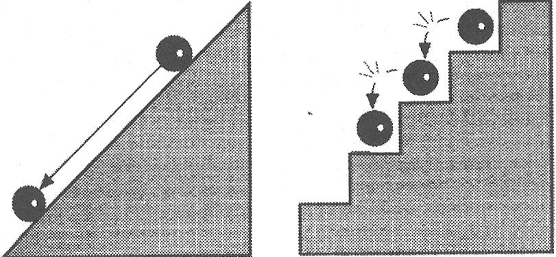
Şekil 1. Kuantum sıçraması. Rampada, topun klasik hareketi süreklidir; merdivende ise, kuantum hareketi sürekli olmayan basamaklarladır (kuantum sıçramaları).
İtiraz edebilirsiniz. Topa bir basamaktan diğerine düşerken ne olmaktadır? Düşüş sırasında arada bir konum almıyor mudur? İşte kuantum teorisinin garipliği burada devreye girer: Bir merdivendeki bir top için, cevap tabi ki "evet" tir ama bir kuantum topu (bir atom veya bir elektron) için, Planck'ın teorisi "hayır" cevabım verir. Bir kuantum topu asla iki basamak arasındaki bir yerde bulunamayacaktır; ya şu ya da bu basamaktadır. İşte bu kuantum süreksizliğidir.
Öyleyse niye yanan odunlarla dolu bir şöminenin önünde bronzlaşamıyorsunuz? Rüzgarda bir sarkacı hayal edin. Normalde bir sarkaç, rüzgar şiddetli olmasa da, böyle bir durumda sallanacaktır. Gelin, bu sarkacın ancak yüksek değerlerde kesikli değerler (ayrı basamaklar) halinde enerji emmesine izin verilmiş olduğunu varsayalım. Başka bir deyişle, bu bir kuantum sarkacıdır. O zaman ne olur? Açıkçası, rüzgar bir aşamada gereken miktarda enerji artışını vermedikçe sarkaç hareket etmeyecektir. Küçük değerlerdeki enerji, onun eşiği aşması için yeterli enerjiyi biriktirmesini sağlayamayacaktır. Durum, bir şöminedeki kıpır kıpır elektronlar için de geçerlidir. Düşük frekanslı radyasyon, küçük kuantum sıçramalarından ortaya çıkar, ama yüksek frekanslı radyasyon büyük kuantum sıçramaları gerektirir. Büyük bir kuantum sıçrayışı, elektronun ortamındaki büyük bir enerji miktarınca desteklenmelidir; içinde odunlar yanan bir şöminedeki enerji, bırakın mor ötesini, mavi ışık için gerekli şartları bile yaratacak kadar güçlü değildir. Şömine karşısında bronzlaşamamanızın sebebi budur.
Planck her bakımdan geleneksel türden bir adamdı ve enerji kuantaları hakkındaki fikirlerini biraz tereddütle açıklamıştı. Hatta, o sıralarda Almanya'da gelenek olduğu üzere, matematik hesaplamalarını ayakta dururken yapmaktaydı. Bu büyük buluşunun ima ettiklerinden hoşlandığı pek söylenemezdi; çünkü bu fikir, fiziksel gerçekliğimizi anlayışımızda tamamen yeni bir yolun, bu devrimi daha ileri taşıyacak bilim adamları için artık görünür hale geldiğini işaret etmekteydi.
Einstein’ın fotonları ve Bohr’un atomu
Bu devrimcilerden biri de Einstein'dı. Kuantum teorisi üstüne ilk araştırma makalesini yayımladığında (1905) Zürih'teki patent bürosunda katip olarak çalışıyordu. O sıralarda popüler olan ışığın bir dalga fenomeni olduğu inancına meydan okuyan Einstein, ışığın bir kuantum -ayrı bir enerji paketi- olarak mevcut olduğunu öne sürdü; artık buna foton diyoruz. Işığın frekansı ne kadar yüksekse, her bir paketteki enerji de o kadar fazladır.
Daha da devrimci olan Danimarkalı fizikçi Niels Bohr idi; 1913'te ışık kuantası fikrini, tüm atom dünyasının kuantum sıçrayışlarıyla dolu olduğunu önermek için uyguladı. Hepimize atomun küçücük bir güneş sistemini andırdığı, elektronların tıpkı güneş çevresinde dönen gezegenler gibi bir çekirdek etrafında dolandığı öğretilmişti. 1911'de İngiliz fizikçi Ernest Rutherford tarafından başlatılan bu modelin Bohı'un çalışmasıyla çözülen önemli bir hatası olduğunu öğrenmek sizi şaşırtabilir.
Uzay mekiklerimizle düzenli olarak yörüngelerine fırlatılan uydularımızın bolluğunu düşünün. Bu uydular sonsuza dek dayanmıyorlar. Dünya’nın atmosferiyle çarpışmaları sonucu enerji kaybeder ve yavaşlarlar.
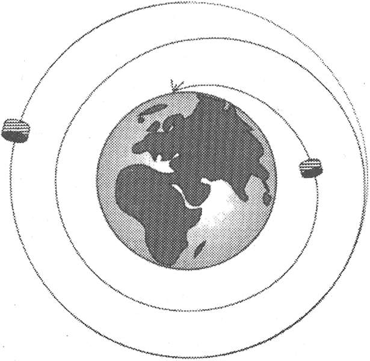
Şekil 2. Uyduların dünya çevresindeki yörüngeleri istikrarsızdır. Rutherford atomundaki elektronların yörüngeleri de aynı şekilde davranırlar.
Yörüngeleri daralır ve en sonunda düşerler (Şekil 2). Klasik fiziğe göre, atom çekirdeği etrafında kaynaşan elektronlar da, sürekli ışık yayarak enerji kaybetmekte ve en sonunda çekirdeğe düşmekteydiler. Demek ki güneş sistemi benzeri atom istikrarlı değildi. Bohr (güneş sistemi benzeri atomu rüyasında gördüğü söylenir) ise kuantum sıçrayışı kavramını uygulayarak istikrarlı bir atom modeli yarattı.
Varsayalım, dedi Bohr, elektronların çizdiği yörüngeler, Planck'ın enerji kuantaları gibi ayrı ayrıdır. O zaman yörüngeler, bir enerji merdiveni oluşturuyormuş gibi görülebilir (Şekil 3). Onlar sabittir, enerji değerlerinde değişme olmaz. Elektronlar bu sabit yörüngelerde iken ışık yaymazlar. Ancak bir elektron yüksek enerjili bir yörüngeden düşük enerjili bir yörüngeye (enerji merdiveninin yüksek bir basamağından alçak bir basamağına) sıçradığında, bir kuantumluk ışık yayar. Demek ki, eğer bir elektron en düşük enerji yörüngesindeyse, sıçrayabileceği daha düşük bir düzeye sahip değildir. Bu zemin kat düzeyindeki konfigürasyon istikrarlıdır ve bir elektronun düşerek çekirdeğe çakılma olasılığı yoktur. Dünyanın her yanında fizikçiler, Bohr'un atom modelini rahat bir nefes alarak selamladılar.
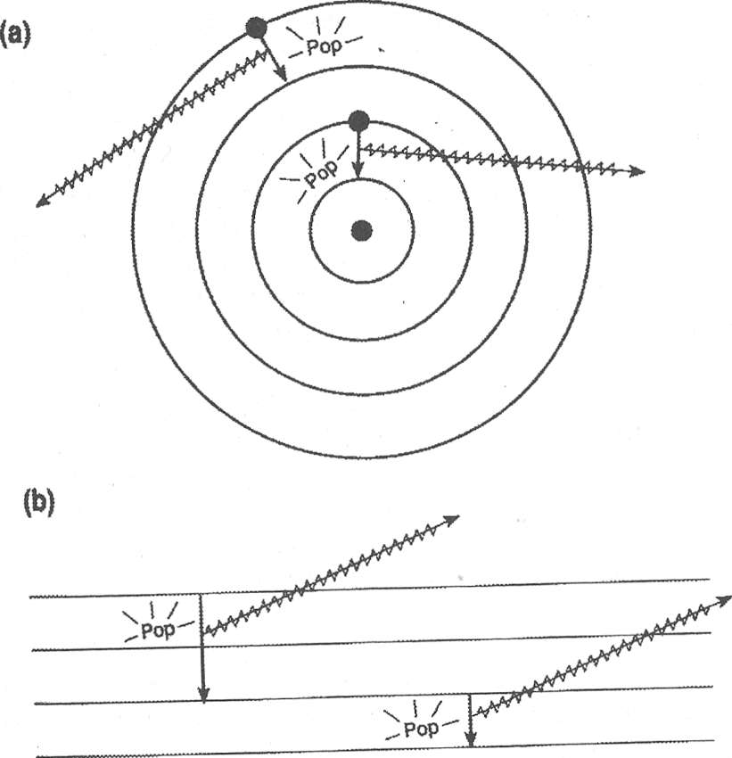
Şekil 3. Bohr yörüngesi ve kuantum sıçrayışı, (a) Bohr’un kuantize yörüngeleri. Elektronlar yörünge atlarlarken, atomlar ışık yayar, (b) Enerji merdiveninde kuantum sıçraması yapmak için, basamaklar arasındaki mekandan geçmek zorunda değilsiniz.
Bohr, Hydra'nın istikrarsızlık kafasını kesmişti ama yerine hemen bir başkası çıkmıştı. Bohr'a göre elektron, yörüngeler arasındaki herhangi bir konumu asla işgal edemezdi; dolayısıyla sıçradığında, bir biçimde doğrudan bir başka yörüngeye aktarılmalıydı. Elektronun sıçrayışını, merdivenin bir basamağından diğerine sıçramak gibi hayal etmeye meyilli olsanız da, elektron o basamaklar arasındaki mekanı gerçekten geçmeksizin sıçrar. Bir basamakta gözden kaybolup, bir diğerinde -hayli süreksiz olarak- tekrar görünür hale geliyor gibidir. Dahası var: Eğer birden fazla alt basamak varsa belirli bir elektronun ne zaman sıçrayacağını ya da nereye sıçrayacağını da söyleyemeyiz. Sadece olasılıklar verebiliriz.
Belki de ışığın kuantum kavramı hakkında garip bir şeyler dikkatinizi çekmiştir. Işığın kuanta olarak, foton olarak mevcut olduğunu söylemek, ışığın parçacıklardan yapıldığını söylemektir; tıpkı kum taneleri gibi. Ancak böyle bir cümle, ışıkla edindiğimiz sıradan deneyimlerin birçoğuyla çelişmektedir.
Örneğin, uzaktaki bir sokak lambasına bir şemsiyenin kumaşından baktığınızı hayal edin. Sürekli, kesilmemiş bir ışık akıntısının içeri aktığını görmeyeceksiniz; ışık küçük parçacıklardan yapılmış olsa böyle olmasını beklerdiniz. (Bir elekten kum dökün, ne demek istediğimi göreceksiniz.) Bunun yerine, göreceğiniz şey bir parlak, bir koyu saçaklardan oluşan bir desendir; teknik olarak kırınım (difraksiyon) deseni adını taşır. Işık, dokumanın ipleri içinde ve çevresinde eğilir ve ancak dalgaların yapabileceği desenler yaratır. Böylece en sıradan deneyimimiz bile ışığın bir dalga olarak davrandığını göstermektedir.
Kuantum teorisi yine de ışığın aynı zamanda bir parçacık demeti ya da fotonlar olarak davrandığında ısrar eder. Gözlerimiz öylesine harika araçlardır ki, ışığın kuantum yani tanecikli doğasını kendimiz gözlemleyebiliriz. Bir dahaki sefer sevdiğinizden alacakaranlıkta ayrılıyorken, arkasından bakın. Gittikçe uzaklaşan bedeninin görüntüsünün nasıl parça parça göründüğüne dikkat edin. Eğer bedenden yansıyan ve retinanızdaki optik alıcılara çarpan ışık enerjisi dalga benzeri bir sürekliliğe sahipse, en azından onun bedeninin her kısmından gelen ışığın bir bölümü optik alıcılarınız için her zaman uyarıcı olurdu: Her zaman tam bir görüntü görebilirdiniz. (Loş ışıkta, aydınlık ve. karanlık arasındaki kontrast çok açık olmayacaktır ama bu bir dış hattın netliğini etkilemez, emin olun.) Ancak gördüğünüz kesin ve net bir dış hat değildir çünkü gözlerinizdeki alıcılar tekil fotonlara cevap vermektedirler. Loş ışıkta, parlak ışığa göre daha az foton vardır; demek ki bu hipotetik alacakaranlık senaryosunda belirli bir zamanda alıcılarınızdan sadece birkaçı uyarılacaktır, loşça aydınlatılmış bir bedenin dış hatlarını veya biçimini net biçimde belirleyemeyecek kadar az alıcı. Sonuç olarak, göreceğiniz görüntü parçalı olacaktır.
Bir soru daha sizi rahatsız ediyor olabilir. Niçin retinadaki alıcılar verileri, beyin tüm parçalı resimleri tek bir bütün halinde toplayana kadar, yeterince bilgiyi sonsuza dek depolamıyorlar? Optik alıcılar, kuantum fenomenleri için daima gündelik örneklere ihtiyaç duyan kuantum fizikçileri için neyse ki bilgiyi sadece saniyenin çok küçük bir bölümü süresince depolayabilmektedirler. Loş ışıkta, belirli bir zamanda tam bir görüntü yaratmaya yeterli alıcı ateşlenmez. Bir dahaki sefer, sevdiğinizin alacakaranlıktaki sisli, gittikçe uzaklaşan görüntüsüne el sallarken, ışığın kuantum doğası üstünde düşünmeyi unutmayın; ayrılık acısını kesinlikle hafifletecektir.
Işık bir dalga olarak göründüğünde, aynı anda iki (ya da daha çok) yerde birden olma yeteneğine sahip görünmektedir; bir şemsiyenin yarıklarından ve bir kırınım deseni yaratıyorken onu bir fotoğraf filmi üstüne düşürürsek, kendini ayrı ayrı, nokta nokta, bir parçacığın demeti olarak gösterir. Demek ki ışık hem dalga hem de parçacık olmalıdır. Paradoksal, değil mi? Eski fiziğin siperlerinden biri tehlikededir: Dilde muğlak olmayan tanımlar. Ayrıca nesnellik fikri de tehlikededir: Işığın doğası -ışığın ne olduğu- onu nasıl gözlemlediğimize bağlı olabilir mi?
Sanki ışıkla ilgili bu paradokslar yeterince kışkırtıcı değilmiş gibi, kaçınılmaz olarak bir başka soru daha ortaya çıkar: Elektron gibi bir nesne, hem dalga hem de parçacık olabilir mi? Işığınki gibi bir düaliteye (ikiliğe) sahip olabilir mi? Bu soruyu ilk soran ve meslek sarsıcı olumlu cevabı inatla öneren fizikçi, Fransız aristokrasisinden bir prensti: Louis- Victor de Broglie.
1924 yılında doktora tezini yazmakta olan de Broglie, Bohr atomunun sabit yörüngelerinin farklılığı ile bir gitarın çıkardığı ses dalgalarınınki arasında bir bağlantı kurdu.
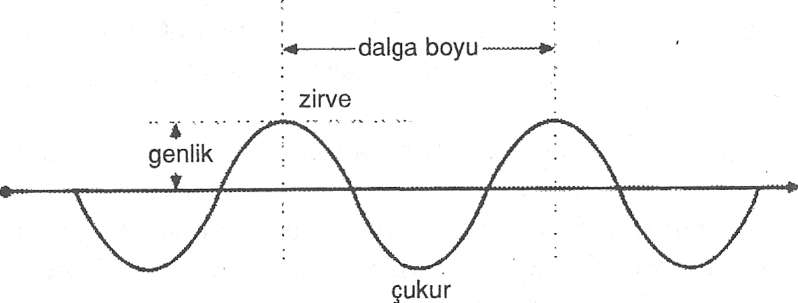
Şekil 4. Bir dalganın grafik temsili.
Bir aracı ortamda yol alan bir ses dalgasını düşünelim (Şekil 4). Ortamın parçacıklarının dikey yer değiştirmesi sıfırdan bir maksimuma (tepe), tekrar sıfıra, oradan bir negatif maksimuma (çukur) ve tekrar sıfıra diye uzaklık artıkça tekrar tekrar yinelenir. Bir yöndeki maksimum dikey yer değiştirme (tepe ya da çukurdan sıfıra) genlik diye adlandırılır. Ortamın tekil parçacıkları oldukları yerde ileri geri hareket ederler. Ancak bu tahrik edilmiş (harekete geçirilmiş) dalga ortamda yayılır: Bir dalga, yayılan titreşimdir. Bir saniyede belirli bir noktadan geçen zirvelerin sayısı, dalganın frekansı olarak adlandırılır. Zirveden zirveye olan uzaklık ise dalga boyudur.
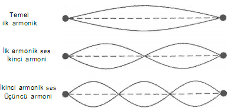
Şekil 5. Bir gitar telindeki duran ya da sabit dalganın ilk birkaç armoniği.
Bir gitar telini çekmek onu harekete geçirir ama sonuçta oluşan titreşimler sabit olarak adlandırılırlar çünkü tel boyunca yol almazlar. Teldeki herhangi bir bölgede, telin parçacıklarının konum değiştirmesi zaman içinde değişir: Dalgalılık vardır ama dalgalar mekanda yayılmazlar (Şekil 5). İşittiğimiz yayılan dalgalar, titreşen tellerin sabit dalgaları sayesinde harekete geçen dalgalardır.
Bir gitardan çıkan bir müzik notası, bir dizi sesin tamamından -bir frekans spektrumundan- oluşur. De Broglie için ilginç olan, sabit dalgaların gitar teli boyunca, armoni adı verilen kesikli bir frekans spektrumu oluşturmalarıydı. En düşük frekans sesi, ilk armoni diye adlandırılır; duyduğumuz perdeyi belirleyen budur. Daha yüksek frekanslar -bir müzik notasına farklı niteliğini veren müzikal sesler- bu ilk armoniğin tam sayı katlarını temsil eden frekanslara sahiptir.
Sabit olmak, kendi üstüne kapanan dalgaların bir özelliğidir. Böyle dalgalar, bir fincan çayda kolayca başlatılabilirler. De Broglie, "Atomun yörüngesindeki elektronlar kendi üstüne kapanan dalgalar mıdır?" diye sordu. Eğer durum buysa, ayrı ayrı sabit dalga desenleri üretirler miydi?
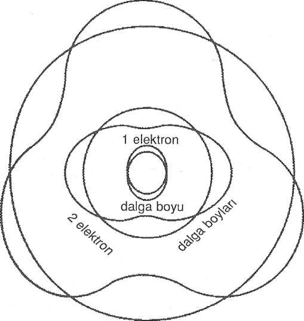
3 elektron dalga boyları
Şekil 6. De Broglie'nin görüşü: Elektronlar, atomun içinde kapalı kalmış sabit dalgalar olabilir miydiler?
Örneğin, belki de en düşük atomik yörünge en düşük frekansta -ilk armonide- sabit bir dalga oluşturmaktaydı ve daha yüksek yörüngeler de daha yüksek armonilerin sabit elektron dalgalarına denk gelmekteydi (Şekil 6).
Şüphesiz, de Broglie tezini yukarıdakilerden çok daha gelişkin argümanlarla desteklemişti ama durum böyle olsa da, tezinin onaylanması için çok zorlandı. Tez en sonunda fikri alınmak üzere Einstein'a gönderildi. Işığın düalitesini ilk algılayan kişi olan Einstein, de Broglie'nin pekala haklı olabileceğini görmede zorluk çekmedi: Madde de pekala ışık gibi ikili yapıda olabilirdi. Einstein tezi hakkında "Çılgın görünebilir ama sağlam bir tez," diye cevap yazdığında, de Broglie doktorasını alıyordu.
Bilimde, deney en son hakemdir. De Broglie'nin elektronun dalga doğası fikri, bir elektron huzmesi bir kristalden (elektronları kırınıma uğratmaya uygun, üç boyutlu bir "şemsiye") geçirilip fotoğraflandığında, harika bir şekilde deneyle de gösterilmiş oldu. Sonuç, bir kırınım deseniydi (Şekil 7).
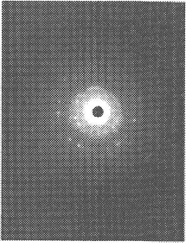
Şekil 7. Dairesel kırınım halkaları, elektronların dalga doğasını işaret ediyor. (Stan Miklavzina).
De Broglie'nin dalgaları hakkında 1926'da düzenlenen bir seminerin sonunda bir fizikçi diğer bir fizikçiye, eğer madde bir dalgaysa, madde dalgasını tanımlamak için bir dalga denklemi olması gerek, diye şaka yapıyordu. Bunu söyleyen fizikçi şakayı anında unuttu ama şakayı duyan fizikçi, yani Erwin Schrödinger madde için dalga denklemini keşfetmek üzere çalışmaya koyuldu; bu denklem, bugün Schrödinger denklemi olarak biliniyor. Bu, yeni fizikte New- ton'un kanunlarının yerini alan matematiğin dönüm noktasıydı. Schrödinger denklemi, laboratuvar deneylerimizin açığa çıkardığı tüm mikroskobikaltı nesnelerin o harikulade özelliklerini önceden tahmin etmekte kullanılır. Werner Heisenberg aynı denklemi daha da önce keşfetmişti ama daha örtülü bir matematik formundaydı. Schrödinger ve Heisenberg'in çalışmalarından ortaya çıkan matematiksel resmiyet, kuantum mekaniği olarak adlandırılır.
De Broglie ve Schrödinger'in madde dalgası fikri, atomun kayda değer bir tablosunu ortaya çıkarır. Basit terimlerle atomların en önemli üç özelliğini açıklar: istikrarlılıklarını, birbirlerine göre kimliklerini ve kendilerini rejenere etme (yenileyebilme) yeteneklerini. İstikrarlılığın nasıl ortaya çıktığını zaten anlattım (Bohr un yaptığı büyük katkıyı hatırlayın). Atomların belirli bir tür olarak kimliği, sadece kendi üstüne kapanan dalga desenlerinin kimliğinin sonucudur; sabit desenlerin doğası, elektronların çevrelerince değil elektronların kapatılma biçimiyle belirlenmektedir. Atomun müziği, dalga deseni, onu -ister Dünya'da ister Andromeda'da- her nerede bulursanız bulun aynıdır. Dahası, sadece kapatılışının şartlarına bağlı olarak, sabit desenin hiçbir geçmiş tarihi, hafızası yoktur; kendini yeniler, aynı gösteriyi tekrar tekrar yineler.
Elektron dalgaları, sıradan dalgalar değillerdir. Bir kırınım deneyinde bile, tekil elektronlar fotoğraf plakasında lokalize tekil olaylar gibi ortaya çıkarlar; ancak tüm elektron demetinin yarattığı deseni gözlemlediğimizde onların dalga doğasının kanıtını buluruz: kırınım deseni. Elektron dalgaları, olasılık dalgalarıdır, demişti fizikçi Max Born. Bize olasılıkları anlatırlar: Örneğin, parçacığı bulabileceğimiz en muhtemel yer, dalga titreşimlerinin (ya da genliklerin) güçlü olduğu yerdir. Eğer parçacığı bulma olasılığı küçükse, dalga genliği zayıf olacaktır.
Los Angeles üstünde uçan bir helikopterden trafiği seyrettiğinizi hayal edin. Eğer arabalar, Schrödinger’in dalgalarıyla tarif edilmiş olsalardı, dalganın trafiğin arapsaçına döndüğü yerlerde güçlü, sıkışıklıklar arasında ise zayıf olduğunu söylerdik.
Dahası, elektron dalgaları, dalga paketleri olarak tasavvur edilmektedir. Paket kavramını yükleyerek, dalga genliğini mekanın belirli bölgelerinde çok büyük ve kalan yerlerde ise çok küçük yapabiliriz (Şekil 8). Bu önemlidir çünkü dalga,
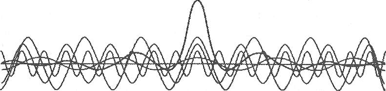
Şekil 8. Birçok basit dalganın üst üste bindirilmesi, tipik bir lokalize dalga paketi üretir. [P. W. Atkins'in izniyle uyarlanmıştır; Quanta: A Handbook of Concepts (Kuanta: Kavramlar El Kitabı). Oxford: Clarendon Press, 1974.]
lokalize bir parçacığı temsil etmelidir.* Dalga paketi, bir olasılık paketidir ve Born elektron dalgaları için, dalga genliğinin -teknik olarak dalga fonksiyonu diye adlandırılır- mekanın bir noktasındaki karesinin, bize elektronu o noktada bulma olasılığını verdiğini söyler. Bu olasılık, bir çan eğrisi ile gösterilebilir (Şekil 9).
* Uzayda dar bir hacimde lokalize olmuş parçacığı, uzaya yayılmış olan dalga olarak nasıl düşünebiliriz? Bir parçacığı, parçacığın bulunduğu bir bölge dışındaki genlikleri toplamı önemsenmeyecek kadar küçük olan birçok dalganın toplamı (dalga paketi) olarak düşünebiliriz. Ç.N.
Olasılık, belirsizliği doğurur. Bir elektron ya da diğer herhangi bir kuantum nesne için bizler, ancak nesneyi şu veya bu konumda bulma olasılığından ya da momentumunun (kütle çarpı hız) şu kadar ya da bu kadar olduğundan söz edebiliriz; ama bu olasılıklar bir çan eğrisi ile gösterilebilecek bir dağılım oluştururlar. Olasılık belirli bir konum değerinde maksimum olacaktır ve bu, elektronu bulacağımız en muhtemel yer olacaktır. Ama elektronun bulunabileceği kayda değer miktarda olasılık içeren birçok mekan da olacaktır. Bu bölgenin genişliği, elektronun konumunun belirsizliğinin derecesini temsil eder. Aynı argüman, elektronun momentumunun belirsizliği hakkında konuşabilmemizi de sağlar.
Bu düşüncelerden yola çıkan Heisenberg, konum ve momentumun belirsizliklerinin çarpımının Planck sabiti denilen küçük bir sayıdan büyük ya da eşit olduğunu matematiksel olarak kanıtladı. Planck tarafından keşfedilen bu sayı, kuantum etkilerinin ölçülebilecek derecede etkili hale geldiği niceliksel skalayı oluşturur. Eğer Planck sabiti küçük olmasaydı, kuantum belirsizliğinin etkileri bizim gündelik makro gerçekliğimizi bile istila edebilirdi.
Klasik fizikte, tüm hareket onu yöneten kuvvetlerce belirlenir. Başlangıç şartlarını (bir nesnenin zaman içinde bir başlangıç anındaki konumu ve hızını) bildiğimizde, onun kesin rotasını Newton'un hareket denklemlerini kullanarak hesaplayabiliriz. Böylece klasik fizik, determinizm felsefesine, tüm maddesel nesnelerin hareketini tamamen tahmin edebilmenin mümkün olduğu fikrine yol açar.
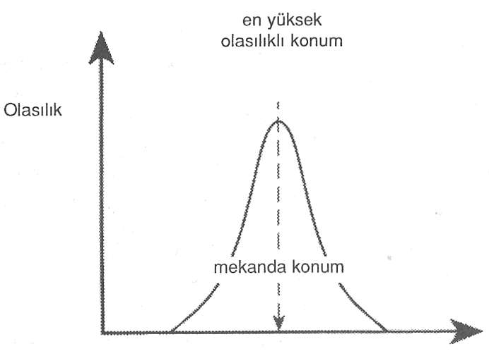
Şekil 9. Tipik bir olasılık dağılımı
Belirsizlik ilkesi ise determinizm felsefesinin tam ortasına bir molotof kokteyli fırlatır. Belirsizlik ilkesine göre, bir elektronun konumunu ve hızını (ya da momentumunu) aynı anda belirleyemeyiz; bunlardan birini doğru biçimde ölçme girişimi, diğerleri hakkındaki bilgiyi bulanıklaştırmaktadır.Dolayısıyla bir parçacığın rotasının hesaplanması için gerekli başlangıç koşulları asla doğru olarak belirlenemez; bir parçacığın rotasının kesin belirli olması da savunulamaz.
Aynı biçimde, Bohr yörüngeleri bir elektronun nerelerde olduğu konusunda kesin bir tanım sağlamaz: Gerçek yörüngelerindeki konumu kırçıldır (fuzzy, saçaklı). Aslında, elektron şu veya bu enerji düzeyinde iken çekirdekten şu veya bu kadar uzaklıktadır, diyemeyiz.
Yazarların belirsizlik ilkesinin öneminin farkında olmadıkları ya da unuttukları birkaç fantezi senaryosunu ele alalım.
Fantastic Voyage (Kan Damarlarında Yolculuk) adlı bir bilim kurgu romanı ve filminde, nesneler sıkıştırılarak küçültülüyordu. Hiç atomları sıkıştırmak mümkün müdür, değil midir diye düşündünüz mü? Zaten, çoğunlukla boş mekandan oluşurlar. Belirsizlik bağlantısını dikkate alarak kendiniz karar verin. Bir atomun boyutu, elektronlarının konumlarıyla ilgili belirsizlik derecesinin yaklaşık tahminidir. Atomu sıkıştırmak, elektronlarını daha küçük bir mekan içinde lokali- ze edecek ve böylece konumlarıyla ilgili belirsizliği azaltacaktır fakat momentumdaki belirsizlik skalası artacaktır. Elektronun momentumunun belirsizliğindeki bir yükselme, onun hızındaki bir yükselme anlamına gelir. Dolayısıyla, sıkıştırmanın sonucunda, elektronun hızı artar ve atomdan daha iyi kaçıp uzaklaşabilir hale gelirler.
Bir başka bilim kurgu örneğinde, Kaptan Kirk (klasik televizyon dizisi Uzay Yolu'nda), "Işınlayın," der. Bir aygıt panelinde bir kol aşağıya çekilir. Hop! Bir platformda duran insanlar gözden kaybolur ve keşfedilmemiş bir gezegen olması beklenen ama daha çok bir Hollywood setine benzeyen bir sahnede tekrar ortaya çıkıverirler. James Blish, Uzay Yolu'na dayanan romanlarından birinde bu tekrar görünme işlemini bir kuantum sıçrayışı olarak anlatmaya çalışmıştı. Tıpkı bir elektronun bir atomik yörüngeden diğerine atlaması ama arada yer alan mekandan bile geçmemesi gibi Atılgan uzay gemisinin mürettebatı da böyle yapıyordu. Sorunu görebilirsiniz. Elektron sıçrayacaktır ve kuantum sıçrayışını yöneten olasılık ve belirsizlik olduğundan, nereye sıçrayacağı nedensel değildir ve tahmin edilemez. Böyle bir kuantum aktarımı Atılgan kahramanlarını en azından arada bir, bir yere gitmek için çok uzun zaman beklemeye zorlardı.
Kuantum fantazileri eğlenceli olabilir ama bu yeni bilimin ve bu kitabın nihai amacı ciddidir. Amaç, gündelik gerçekliğimizle daha etkin biçimde başa çıkmamıza yardımcı olmaktır.
DALGA-PARÇACIK İKİLİĞİ VE KUANTUM ÖLÇÜMÜ
Okuduğunuz bu bilgiler, birkaç kafa karıştıran soruyu açıklamaya yardım eder. Elektronun atom çekirdeği çevresinde dalgalar halinde hareket ettiğini gösteren tablo, elektronun yükünün ve kütlesinin atomun her yanına bulaştığını ima etmez mi? Ya da serbest bir elektron yayıldığında, ki Schrödinger'in teorisine göre bir dalga böyle yapmalıdır, bu elektronun her yerde olduğu, yükünün tüm mekana bulaştığı anlamına gelmez mi? Başka bir deyişle, elektronu dalga olarak gösteren tabloyla, onun parçacık benzeri, lokalize özellikler gösterdiği gerçeğini nasıl uzlaştırabiliriz? Cevaplar pek kapalıdır.
Durum, en azından dalga paketleri söz konusu olduğunda, elektronu küçük bir mekana kapatabiliriz gibi görünmektedir. Heyhat, mesele göründüğü gibi basit değildir. Zamanda belirli bir anda Schrödinger denkleminin geçerli olduğu bir dalga paketi, zamanın geçişiyle yayılmalıdır.
Başlangıçta bir zamanda, bir elektronu küçük bir nokta halinde lokalize edebiliriz ama elektronun dalga paketi birkaç saniye içinde tüm mahalleye yayılacaktır. Başlangıçta elektronu küçücük bir noktacık olarak lokalize halde bulma olasılığı baygınlık verecek kadar yüksek olmasına rağmen, elektronun mahallede herhangi bir yerde ortaya çıkıverme olasılığının kayda değer hale gelmesi sadece birkaç saniye alır. Ve yeterince beklersek, elektron ülkenin herhangi bir yerinde, hatta galaksinin herhangi bir yerinde de ortaya çıkabilir.
Uzmanlar arasında kuantum garipliği hakkında bitmez tükenmez şakalar yapılmasına yol açan da dalga paketinin bu yayılmasıdır. Örneğin, bir yılbaşı hindisini materyalize etmenin kuantum mekaniğindeki yolu şöyledir: Fırını hazırlayın ve bekleyin; yakındaki bir kasaptan çıkan bir hindinin fırınınızda materyalize olma olasılığı sıfır değildir.
Hindi sevenlerin şansızlığına bakın ki, hindi gibi kocaman nesneler söz konusu olunca, yayılma son derece yavaştır. Bir Şükran Günü hindisinin bir lokmasının bile bu şekilde materyalize olmasını tüm evrenin hayatı boyunca bekleyebilirsiniz.
Peki ya bir elektron? Elektronun dalga paketinin tüm mahalleye yayılışını, lokalize bir parçacık tablosuyla nasıl uzlaştırabiliriz? Cevap, hesaplayışımıza gözlem eylemini dahil etmemiz gerektiğidir.
Eğer elektronun yükünü ölçmek istersek, bir sis odasındaki buhar bulutu gibi bir şeyle yolunu kesmemiz gerekir. Bu ölçümün bir sonucu olarak, elektronun dalgasının çöktüğünü varsayımlıyız, böylece artık elektronun buhar bulutundan geçerken izini görebiliriz (Şekil 10). Heisenberg'e göre: "Elektronun yolu, ancak biz onu gözlemlediğimizde mevcut olur." Onu ölçtüğümüzde, elektronu her zaman bir parçacık olarak lokalize halde buluruz. Ölçümümüzün elektron dalgasını parçacık haline indirgediğini söyleyebiliriz.
Schrödinger dalga denklemini açıkladığında, o ve diğerleri belki de kuantum sıçrayışları fiziğini -süreksizlik fiziğini- tasfiye ettiklerini düşünmüşlerdi çünkü dalga hareketi sürekliydi. Ancak kuantum nesnelerinin parçacık doğası, onların dalga doğası ile uzlaştırılmalıydı.
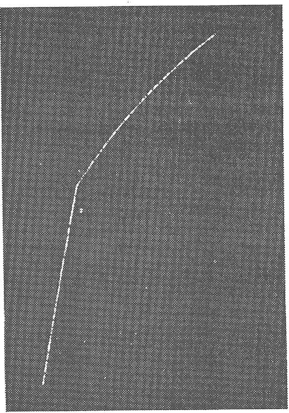
Şekil 10. Bir elektronun buhar bulutundan geçerken bıraktığı iz.
Böylece, dalga paketleri önerildi. En sonunda, dalga paketinin yayılmasının tanınması ve paketin boyutunu anında çökertenin bizim gözlemimiz olduğunun farkına varılmasıyla, çökmenin süreksiz olması gerektiğini gördük (sürekli çökme, zaman alırdı).
Durum, kuantum sıçrayışları olmadan kuantum mekaniğine sahip olamazmışız gibi görünüyor. Schrödinger bir keresinde Bohr’u Kopenhag'da ziyaret etmiş ve kuantum sıçramalarına karşı günlerce protestoda bulunmuştu. En sonunda, şu duygusal patlamayla durumu kabullendiği söylenir: "Bu kahrolası kuantum sıçramasını kabul etmek zorunda olduğumu bilseydim, kuantum mekaniğine hiç bulaşmazdım."
Atoma geri dönelim; eğer elektronun konumunu, bir kararlı yörüngede olduğunda ölçersek, onun olasılık bulutunu yine onu belirli bir konumda, her yere bulaşmamış biçimde bulmak üzere çökerteceğiz. Eğer elektronu aramak için daha çok sayıda ölçüm yaparsak, onu, Schrödinger denklemince de tahmin edildiği gibi, onu bulma olasılığının yüksek olduğu yerlerde daha sık bulacağız. Aslında, çok sayıda ölçümden sonra, eğer dağılımı ölçülen konumlara göre noktalar halinde gösterirsek, Schrödinger denkleminin çözümüyle verilen kırçıl yörüngeyi hayli andıracaktır (Şekil 11).
Kaçışan bir elektron bu perspektiften nasıl görünür? Herhangi bir mikroskobik altı hızlı nesne üstüne bir başlangıç gözlemi yaptığımızda, onu küçücük bir dalga paketi, bir parçacık olarak lokalize olmuş halde buluruz. Ancak gözlemden sonra, paket yayılır ve paketin yayılması, paket hakkındaki belirsizliğimizin bulutudur. Eğer tekrar gözlemlersek, paket bir kez daha lokalize olur ama gözlemlerimiz arasında daima yayılır.
Elektronları seyretmek, der fizikçi-filozof Henry Margenau, bir yaz akşamı ateş böceklerini seyretmek gibidir Şurada bir parıltı, beride bir ışıltı görürsünüz ama gözlemleriniz arasında ateş böceğinin nerede olduğuna dair hiçbir fikriniz yoktur. İzlediği yolu bile tam bir güvenle tanımlayamazsınız. Ay gibi makroskobik bir nesne için bile, kuantum mekaniği aynı tabloyu tahmin eder; tek fark, dalga paketinin yayılmasının, gözlemler arasında algılanamayacak kadar küçük
(ama asla sıfır değil) olmasıdır.
Artık meselenin püf noktasına geliyoruz.
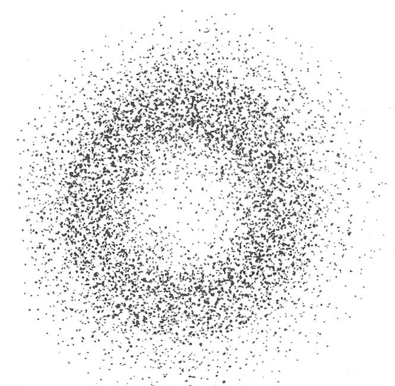
Sekil 11 Bir hidrojen atomunun en düşük yörüngesindeki konumunun tekrarlanan ölçümlerinin sonuçlan. Elektron dalgasının sıklıkla onu bulma olasılığının yüksek olarak tahmin edildiği yerde çöktüğü açıktır, böylece kırçıl (bulanık) bir yörünge ortaya çıkar.
Biz onları ne zaman ölçersek ölçelim, kuantum nesneleri bir parçacık olarak tekil bir yerde görünmekteler. Olasılık dağılımı, bu yeri (veya o yerleri) ölçümü yaptığımızda onun bulunması muhtemel yerler olarak tanımlamaktadır; daha fazlası değil. Biz ölçmediğimizde, kuantum nesneleri yayılır ve aynı anda birden çok yerde mevcut olurlar, tıpkı bir dalga veya bulutun yaptığı gibi; daha azı değil.
Kuantum fiziği, hareketin determinist rotaları ve nedensel süreklilik gibi eski kavramlarımıza meydan okuyan yeni ve heyecan verici bir dünya görüşü sunar. Eğer başlangıç koşulları bir nesnenin hareketini sonsuza dek belirlemiyorsa, bunun yerine onu her gözlemleyişimizde yeni bir başlangıç varsa, o zaman dünya en temel düzeyde yaratıcı demektir.
Neredeyse her gün aynı zamanda kasaba meydanından geçen bir haham, bir Kazak'ın dikkatini çekmiş. Bir gün merakla sormuş: "Nereye gidiyorsun haham?"
Haham cevap vermiş: "Emin değilim."
"Her gün bu sıralarda bu yoldan geçiyorsun. Elbette, nereye gittiğini biliyorsundur."
Haham bilmediğinde ısrar edince, Kazak sinirlenmiş, meraklanmış ve en sonunda hahamı hapse tıkmış. Tam kilidi çevirirken, haham ona bakmış ve nazikçe şöyle demiş: "Görüyorsun ya, bilmiyordum."
Kazak yolunu kesmeden önce, haham nereye gidiyor olduğunu biliyordu ama ondan sonra bilemedi. Yarıda kesmek (buna ölçüm de diyebiliriz) yeni olasılıklar sunmuştu. Kuantum mekaniğinin mesajı da budur. Dünya, başlangıçtaki şartlar tarafından bir kez ve her zaman geçerli olmak üzere belirlenmiş değildir. Her ölçüm olayı, potansiyel olarak yaratıcıdır ve yeni olasılıkları açabilir.
Dalga-parçacık paradoksuna yepyeni bir bakış yolu, Bohr tarafından tanımlanmıştır. Elektronun dalga ve parçacık doğası düalistik veya basitçe, zıt kutuplar değildir, dedi Bohr. Bunlar tamamlayıcı deneylerde bize açık hale gelen tamamlayıcı özelliklerdir. Bir elektronun kırınım tablosunu ele aldığımızda onun dalga doğasını açığa çıkarıyoruz; onu bir sis odası içinde izlediğimizde, onun parçacık doğasını görüyoruz. Elektronlar ne dalga ne de parçacıktırlar. Onlara "dalga-parça," diyebiliriz çünkü gerçek yapıları bu iki tanımı da aşmaktadır. Bu, tamamlayıcılık ilkesidir.
Aynı kuantum nesnenin dalgalık ve parçacıklık gibi görünüşte çelişen özelliklere sahip olması olgusu üstünde tefekküre dalmak, kişinin akıl sağlığı açısından tehlikeli olacağından, doğa bir tampon sağlamıştır. Bohr'un tamamlayıcılık ilkesi, kuantum nesneleri hem parçacık hem de dalga niteliğine sahip olabilmelerine rağmen, bizlerin ancak belirli bir zamanda belirli bir deneysel düzenleme ile dalga-parçanın ancak bir unsurunu ölçebileceğimiz konusunda bizi temin eder. Aynı şekilde, dalga-parçanın görmek istediğimiz belirli unsurunu, uygun deneysel düzenlemeyle birlikte seçeriz.
İnsanın yeni fiziğin devrimci fikirlerini kavrar kavramaz, Newtoncu fiziğin tamamen yanlış olduğunu düşünmesi son derece hatalıdır. Eski fizik, yeni fizik için özel bir vaka olarak çoğu (ama hepsinde değil) makro madde aleminde yaşamaktadır. Bilimin önemli bir özelliği, yeni bir düzen eskisinin yerini aldığında, o düzenin uygulandığı alana uzan- maşıdır. Eski alanda, eski bilimin matematik denklemleri hala sağlamdır (deneysel verilerle doğrulanmıştır). Dolayısıyla klasik fizik hükümdarlığında, kuantum mekaniğinin nesnelerin hareketi hakkındaki sonuçları, sanki uğraştığımız cisimler klasikmişlercesine, Newtoncu matematik kullanılarak elde edilen sonuçlara açıkça uygundur. Buna karşılıklılık ilkesi denir ve Bohr tarafından formüle edilmiştir.
Klasik fizik ve kuantum fiziği arasındaki ilişki, şu ünlü "Eşim ve Kayınvalidem" adlı görsel illüzyonu andırır (Şekil 12). Bu çizimde ne görüyorsunuz? Başlangıçta, ya eşi ya da kayınvalideyi görürsünüz. Ben önce hep genç kadını görüyorum. Çizimdeki diğer imgeyi keşfetmek aslında hayli zaman alabilir.
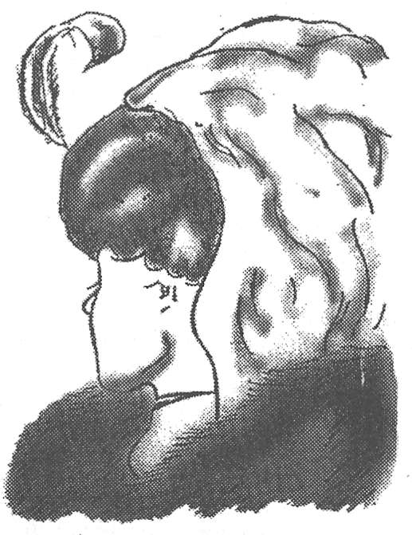
Şekil 12. Eşim ve Kayınvalidem (W. E. Hill)
Ama bırakmazsanız, birdenbire diğer imge ortaya çıkıverir. Eşin çenesi, kayınvalidenin burnuna dönüşür; boynu ise yaşlı kadının çenesine ve böyle gider. Neler oluyor, diye meraklanırsınız. Çizgiler aynıdır ama birdenbire resmi yeni bir biçimde algılamak sizin için mümkün hale gelir. Kısa süre içinde iki resim arasında, eski ve yeni imge arasında gidip gelmenin kolaylaştığını görürsünüz. Belirli bir zamanda iki imgeden yine birini görmektesinizdir ama şuurunuz genişlemiş olduğundan ikiliğin farkındasınızdır. İşte böyle bir genişlemiş farkındalıkta, kuantum fiziğinin garipliği anlamlı gelmeye başlar. Hatta heyecan verici hale gelir. Hamlet'in Horatio'ya söylediğini uyarlarsak, göklerde ve Yerküre'de klasik fizikte düşlenenden çok daha fazlası var.
Kuantum mekaniği bize daha geniş bir perspektif, algılayışımızı yeni bir aleme genişleten yeni bir bağlam verir. Doğayı ayrı biçimler -dalgalar ya da parçacıklar- olarak görebilir ya da tamamlayıcılığı keşfedebiliriz: Dalgaların ve parçacıkların, aynı şeye özgü olduğu fikrini.
Born, Heisenberg ve Bohr tarafından geliştirilen, kuantum mekaniğinin Kopenhag yorumuna göre, bizler kuantum nesnelerini dalgalar olarak hesaplar ve dalgaları da olasılık dağılımı şeklinde yorumlarız. Onların konumu ve momentumu gibi vasıflarını, bir biçimde yaklaşık olarak belirler ve tamamlayıcı biçimde anlarız. Ek olarak, süreksizlik ve kuantum sıçramaları -örneğin, sere serpe yayılmış bir dalga paketinin gözlem üstüne çökmesi- bir kuantum nesnesinin davranışının temel unsurları olarak görülür. Kuantum mekaniğinin bir diğer unsuru ise ayrılmazlıktır. Onu nasıl gözlemlediğimizden söz etmeden bir kuantum nesnesinden söz etmek muğlak olur çünkü bu ikisi birbirinden ayrılamaz. Son olarak, koca dev nesneler için, kuantum mekaniğinin tahminleri, klasik fiziğin tahminlerine eştir. Bu durum, doğrudan duyularımızla algıladığımız doğanın makro bölgesinde olasılık ve süreksizlik gibi kuantum etkilerin bastırılmasını öne sürer. Klasik karşılıklılık, kuantum gerçekliğini kamufle eder.
Materyalist realizmi yarıp geçmek
Kuantum teorisinin ilkeleri, materyalist realizmin haksız varsayımlarını bir kenara bırakmamızı mümkün kılmaktadır.
Varsayım 1: Güçlü nesnellik. Materyalist birinin temel varsayımı, dışarıda, bizden bağımsız olan bir nesnel, fiziksel evrenin var olduğu şeklindedir. Bu varsayımın bazı bariz işlevsel geçerliliği vardır ve sıklıkla bilimi anlamlı biçimde yürütmek için gerekli olduğu varsayılır. Bu varsayım gerçekten geçerli midir? Kuantum fiziğin dersine göre, bir kuantum nesnesinin belirli bir durumda açığa çıkaracağı -dalga veya parçacık- unsuru biz seçeriz. Dahası, gözlemimiz kuantum dalga paketini, lokalize olmuş bir parçacığa çökertir. Özneler ve nesneler çözülemez biçimde birbirine kaynamıştır. Eğer özneler ve nesneler bu biçimdeyse, güçlü nesnellik varsayımını nasıl koruyabiliriz ki?
Varsayım 2: Klasik determinizm. Klasik bilim adamının materyalist realizme itibar kazandıran bir başka varsayımı, dünyanın temel anlamda deterministik olduğudur; tüm bilmemiz gereken, her nesne üstünde iş gören kuvvetleri ve başlangıç şartlarıdır (nesnenin başlangıçtaki hızı ve konumu). Ancak, kuantum belirsizlik ilkesi bir nesnenin hem hızını hem de konumunu aynı anda mutlak doğrulukla asla belirleyemeyeceğimizi söyler. Başlangıç şartlan hakkındaki bilgimizde her zaman hata olacaktır ve kesin determinizm hüküm sürmez. Bizzat nedensellik fikri bile şüphelidir. Kuantum nesnelerinin davranışı olasılıklı olduğundan, tek bir nesnenin davranışının kesin sebep-sonuç tanımı imkansızdır. Bunun yerine, büyük bir parçacık grubu hakkında konuşurken elimizde istatistik neden ve istatistik sonuç vardır.
Varsayım 3: Yerellik. Yerellik varsayımı -fiziksel nesneler arasındaki tüm karşılıklı etkileşimlerin yerel işaretler yoluyla yapılması-, nesnelerin esasen bağımsız ve birbirinden ayrı olarak var olduğunu öneren materyalist görüş açısı için çok önemlidir. Ancak eğer dalgalar uzak mesafelere yayılıyor ve derken biz ölçüm yapınca birdenbire çöküyorlarsa, o zaman ölçümümüzün tesiri yerel olarak yol almıyor demektir. Demek ki yerellik (mekansallık ya da noktasallık) geçersizdir. Bu, materyalist realizme inen bir diğer öldürücü darbedir.
Varsayım 4 ve 5: Materyalizm ve epifenomenalizm. Materyalist bir kişi öznel zihin (şuur) fenomenlerinin, maddenin epifenomenleri olduğunda ısrar eder. Bunlar ancak maddesel beyin malzemesine indirgenebilirler. Ancak, kuantum nesnelerinin davranışlarını anlamak için, tamamlayıcılık ilkesi ve özne-nesne karışımı fikrine göre şuuru -seçme yeteneğimizi- işe dahil etmemiz gerekir. Dahası, maddenin bir epifenome- ninin maddeyi etkilemesi saçma görünmektedir: Eğer şuur bir epifenomense, bir kuantum ölçümü yaptığında bir kuantum nesnenin yayılmış dalgasını nasıl lokalize bir parçacığa çökertebilir?
Karşılıklılık ilkesi bir kenara bırakıldığında, fiziğin yeni paradigması -kuantum fiziği- materyalist realizmin diktasıyla çelişmektedir. Bu sonucun çevresinden dolanmanın bir yolu yoktur. Karşılıklılık ilkesini öne sürüp, klasik fizik tüm pratik amaçlar açısından makro nesneler için geçerlidir ve biz de makro dünyada yaşadığımızdan, kuantum garipliğinin, doğanın mikroskobik altı alemde geçerli olduğunu varsayacağız, diyemeyiz. Tam tersine, bu gariplik bizi makro düzeye kadar izlemektedir. Eğer dünyayı klasik ve kuantum fiziği bölgelerine ayırırsak, çözülemez kalacak kuantum paradoksları vardır.
Hindistan'da insanlar maymunları bir kavanoz nohutla yakalarlar. Maymun bir avuç dolusu nohut almak için kavanoza elini sokar. Heyhat, avucu yemekle dolunca, elini çıkaramaz. Kavanozun ağzı, içi dolu avucu için çok dardır. Tuzak işe yarar çünkü maymunun açgözlülüğü nohutları bırakmasını önler. Materyalist realizmin -materyalizmin, determinizmin, yerelliğin vb.- aksiyomları*, bilgimizin bugünkünden daha sınırlı olduğu geçmişte bize iyi hizmet ettiler ama artık tuzağımız haline geldiler. Maddesel alanın dışında uzanan özgürlüğü kucaklamak üzere kesinlik nohutlarını avucumuzdan bırakmalıyız.
* Aksiyom: Belit, kendiliğinden apaçık olan. Ç.N.
Eğer materyalist realizm fizik için yeterli bir felsefe değilse, kuantum davranışının tüm bu garipliğiyle hangi felsefe başa çıkabilir? Bu, dünya üstündeki tüm dinlerin temeli olan idealist monizm felsefesidir.
Geleneksel olarak, insan yaşamına sadece dinler ve hümanist disiplinler fiziksel hayatta kalışın ötesinde değer vermişlerdir: estetik sevgimiz; sanat, müzik ve düşüncedeki yaratıcılığımız; ve birlik sezgisindeki ruhsallığımıza verdikleri değerle. Klasik fizik ve onun felsefi valizi olan materyalist realizme kilitlenip kalan bilimler şüpheciliğin kavalını çalıyordu. Artık yeni fizik; yeni, özgürleştirici -şu anki bilgi düzeyimize uyan- bir felsefe için sesleniyor. Eğer idealist monizm ihtiyaca uyuyorsa, Descartes’ten bu yana ilk kez bilim, insani bilimler ve dinler insanın hakikatini arayışta kol kola yürüyebilirler.